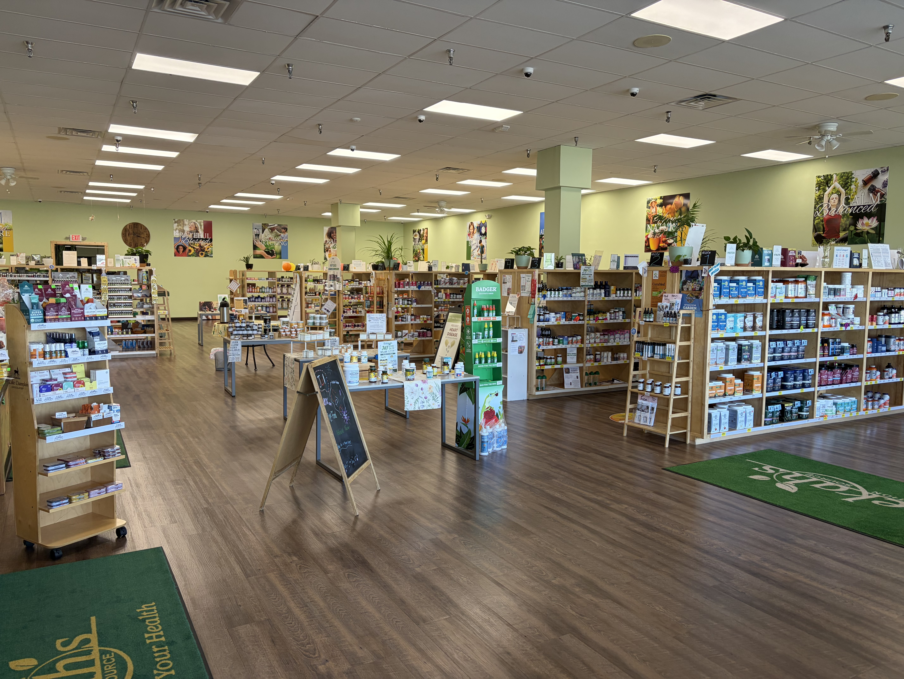
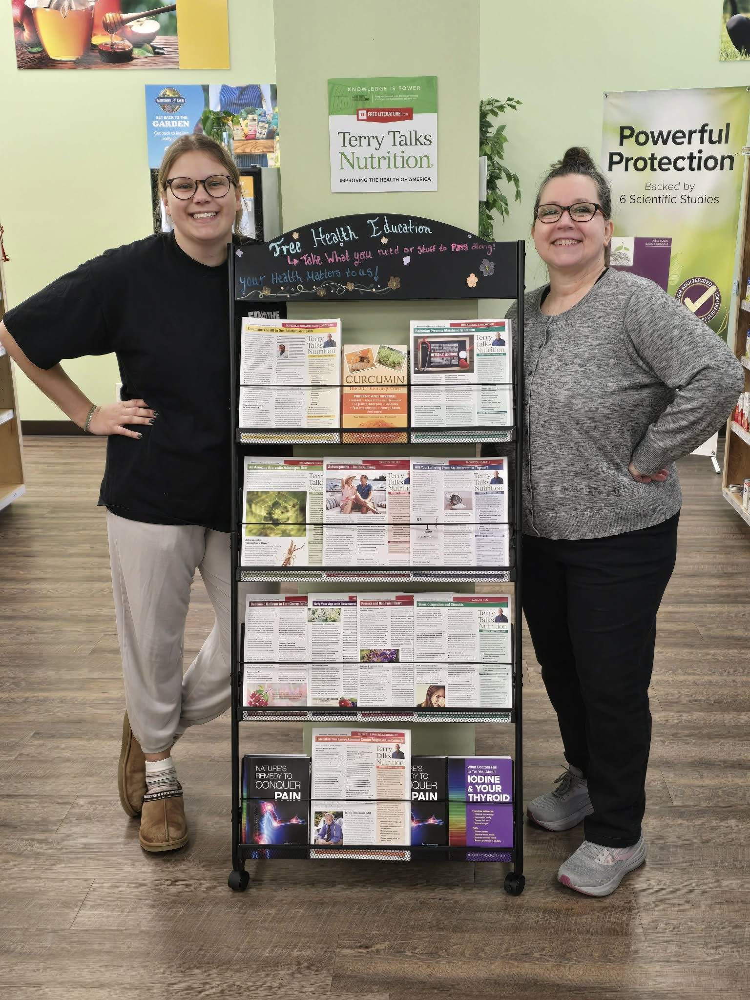
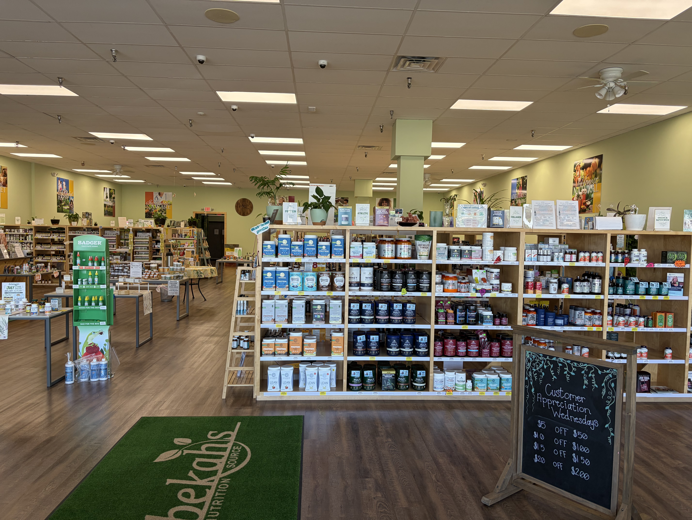
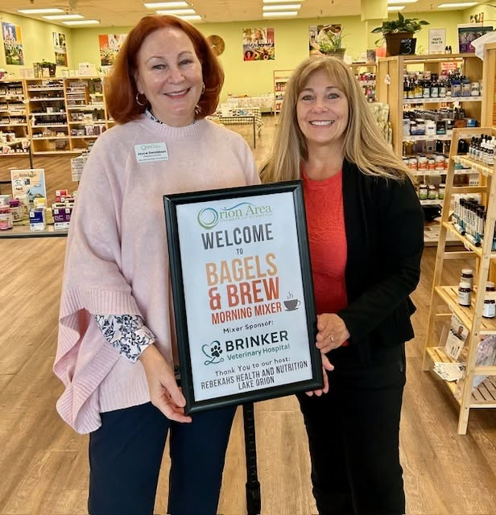
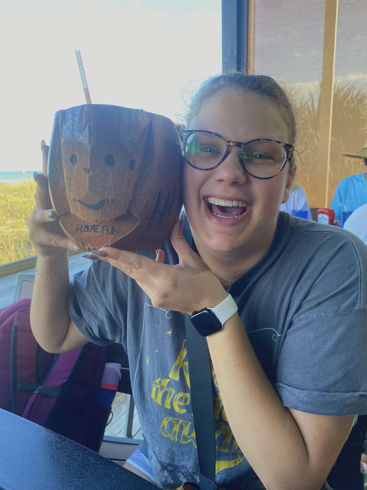
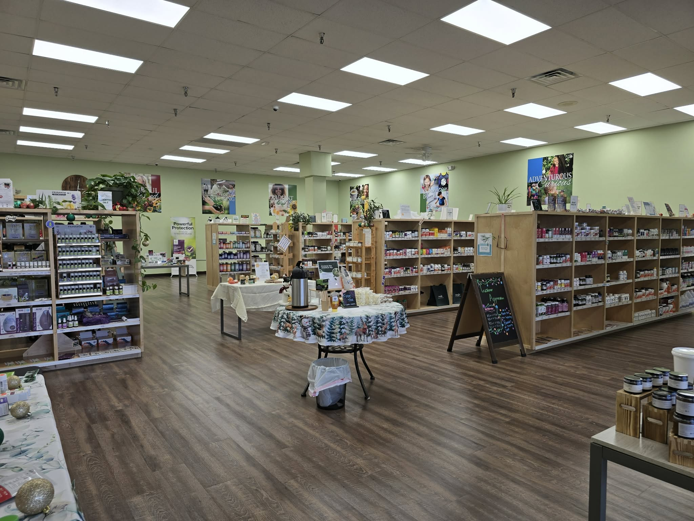

Vitamins & supplements
Vitamins, minerals, probiotics and specialty formulas for a range of everyday needs.
Explore trusted supplements, natural body care, specialty foods, Michigan-made goods and practical guidance from a team that welcomes questions.


Opened in 2020, Rebekah's Lake Orion gives local families a friendly place to explore natural products and make more informed choices.
Bring a shopping list, a label you want to compare or simply a question. The team can help you look at ingredients, formats and everyday options without pressure or one-size-fits-all promises.
Find us near the corner of M-24 and Clarkston Road, next to Planet Fitness, serving Lake Orion, Orion Township, Oxford, Auburn Hills and nearby communities.
Inventory changes, so call the Lake Orion team when you need a specific brand, formula or local product.
Vitamins, minerals, probiotics and specialty formulas for a range of everyday needs.
Herbal options, homeopathic products and Rebekah's 200-plus private-label formulas.
Ingredient-conscious bath, body, skincare, cosmetics and personal-care finds.
Organic snacks, teas, protein options, specialty-diet products and pantry staples.
Essential oils, diffusers, local honey, jewelry and thoughtful wellness gifts.
Local makers, rotating vendors and seasonal discoveries rooted close to home.

Our role is to help you understand and compare products—not diagnose conditions or replace advice from a qualified medical professional.
The Lake Orion store has welcomed educational workshops, wellness fairs and seasonal local-goods gatherings. Check the official calendar for current dates and details.

Meet local educators and practitioners in a welcoming store setting.

Explore the latest Lake Orion schedule before planning your visit.

Discover seasonal gatherings designed around local food, makers and conversation.
The store is a convenient stop for neighbors from Lake Orion, Orion Township, Oxford and Auburn Hills—whether you are new to natural products or already know exactly what you need.
“Great location right off of 24. Everyone is always so friendly, helpful and willing to take the time to answer questions.”Third-party review excerpt shown as a design placeholder. Verify the original source and obtain approval before publishing.
We are near M-24 and Clarkston Road, next to Planet Fitness. Call ahead for product availability, holiday hours or event details.
Choose Lake Orion as your preferred store so locally relevant messages can reach you.